Техническое задание v2: интеграция amoCRM и 1С
1. Цель и бизнес-результат
Автоматизировать обмен между amoCRM и 1С в двух рабочих потоках:
- amoCRM → 1С: создание/поиск контрагента по данным сделки и клиента.
- 1С → amoCRM: передача статусов оплаты счетов и автоматический перевод сделки в этап «Оплачено» после полной оплаты.
Итог для бизнеса: снижение ручного ввода, исключение дублей контрагентов, прозрачный контроль оплаты по сделке в amoCRM.
2. Границы работ (Scope)
2.1. Включено в v2
- Поток A: передача данных из amoCRM в 1С для контрагента через накопление данных на нашей стороне и забор 1С по расписанию.
- Поток B: обратная передача факта оплаты из 1С в amoCRM.
- Хранение в amoCRM идентификатора контрагента из 1С для повторных обращений.
2.2. Исключено из v2 (отменено в исходном ТЗ)
- Поток amoCRM → 1С на создание счетов/услуг (полностью исключён).
- Вся детализация по разнесению услуг на организации в рамках отменённого потока.
2.3. Принципы ответственности сторон
- Наша сторона передаёт данные из amoCRM в согласованной структуре «как есть», без бизнес-логики разруливания контактов/компаний.
- Вся логика обработки, маршрутизации и принятия решений по контактам/компаниям реализуется на стороне 1С.
- Передача оплат из 1С в amoCRM реализуется в реальном времени через входящий хук на нашей стороне.
3. Интеграционный сценарий верхнего уровня
- Менеджер в amoCRM переводит заполненную сделку в стадию «Договор».
- Наша интеграция формирует пакет данных и сохраняет его в буфере на сервере для последующего забора 1С.
- 1С забирает накопленные данные по своему расписанию (ориентир: раз в 1-5 минут).
- 1С обрабатывает клиента (создаёт/находит контрагента по своей логике) и отправляет результат обработки на отдельный callback-адрес.
- amoCRM сохраняет идентификатор контрагента, полученный в callback.
- При оплате счетов 1С в реальном времени отправляет событие на наш хук.
- amoCRM сверяет статус оплаты по сделке; при полной оплате переводит сделку в «Оплачено».
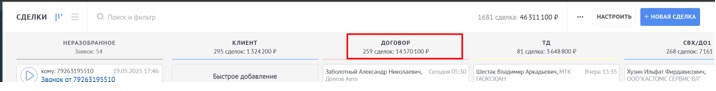
4. Этап 0. Согласование технического контракта обмена
До запуска разработки фиксируется единый контракт обмена между командами amoCRM и 1С.
| Что согласуем | Минимальный результат |
|---|---|
| Формат сообщений | JSON со схемой полей и типами данных |
| Транспорт | Поток A: буфер на нашей стороне + pull со стороны 1С по расписанию; Поток B: push из 1С на наш webhook в реальном времени |
| Периодичность забора 1С | Конфигурируемый интервал на стороне 1С, целевой диапазон 1-5 минут |
| Адреса интеграции | Отдельный endpoint для забора данных 1С и отдельный callback endpoint для ответа по обработанному клиенту |
| Ошибки и повтор | Список кодов ошибок, правила повторной отправки, журнал ошибок |
| Ответственные | Назначены ответственные со стороны amoCRM, 1С и инфраструктуры |
5. Этап 1. Поток A (amoCRM → 1С): контрагент
5.1. Триггер
Сделка в amoCRM переведена в стадию «Договор» и содержит обязательные поля.
5.1.1. Механика передачи
- Пакет не отправляется «в моменте» напрямую в 1С.
- Пакет сохраняется в очереди/буфере на нашем сервере.
- 1С сама забирает накопленные пакеты по расписанию (раз в 1-5 минут).
5.2. Данные к передаче из amoCRM
| Источник | Поля |
|---|---|
| Карточка сделки | Номер сделки, VIN, вид клиента, ФИО клиента (для физ. лица), при наличии номер договора |
| Карточка клиента | ФИО, мобильный, паспортные данные (серия/номер/кем выдан/дата выдачи), код подразделения, место регистрации, ИНН, СНИЛС |
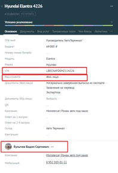
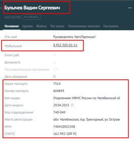
5.3. Правила обработки в 1С
- Наша сторона не выполняет логику распределения контактов/компаний и не принимает решений по созданию сущностей.
- Признак клиента (физ./юр. лицо) определяет вид контрагента в 1С.
- ИНН используется для проверки на дубль. Если контрагент уже существует, новый не создаётся.
- VIN должен быть доступен в 1С в сущности счёта для дальнейшей сверки оплат в потоке B.
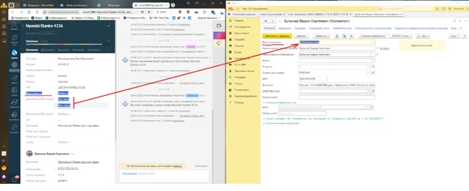
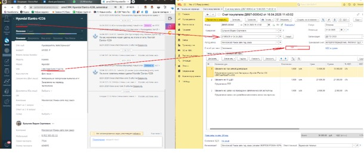
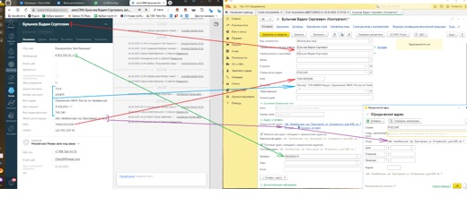
5.4. Ответ 1С в amoCRM
1С отправляет результат обработки конкретного клиента на отдельный callback endpoint. В ответе передаются:
counterpartyId(ID созданного или найденного контрагента),- статус обработки (
created/found/error), - идентификатор исходного пакета/клиента для однозначного сопоставления,
- текст ошибки (если есть).
amoCRM сохраняет counterpartyId в системном поле сделки/клиента для повторных операций после получения callback.
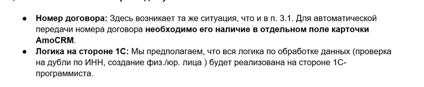
6. Этап 2. Поток B (1С → amoCRM): статусы оплаты
6.1. Входные условия
- В 1С есть счета, относящиеся к сделке amoCRM.
- Есть устойчивый ключ сопоставления (VIN).
6.2. Передаваемые данные из 1С (минимум)
- ID счёта в 1С,
- VIN,
- идентификатор/наименование услуги,
- сумма счёта и сумма оплаты,
- статус оплаты и дата оплаты.
6.3. Логика в amoCRM
- Получить событие об оплате из 1С в реальном времени через входящий webhook.
- Сопоставить платёж со сделкой по VIN.
- Обновить статус оплаты в карточке сделки.
- Если все обязательные счета по сделке оплачены, автоматически перевести сделку в стадию «Оплачено».
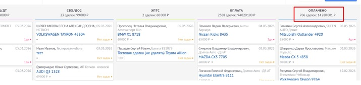
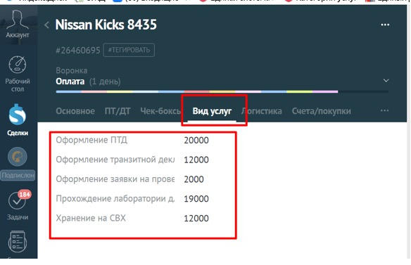
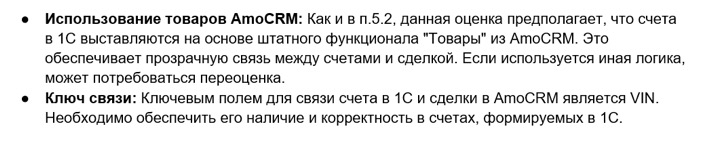
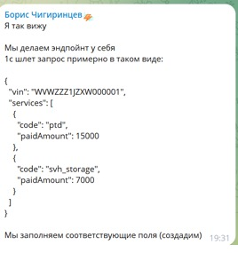
7. Критерии приемки
- При переводе сделки в «Договор» данные попадают в буфер на нашей стороне и доступны 1С для забора без потерь.
- 1С забирает данные по расписанию (1-5 минут или согласованный интервал) и обрабатывает клиентов на своей стороне.
- По каждому обработанному клиенту 1С отправляет callback на отдельный endpoint, callback корректно сопоставляется с исходным пакетом.
- При дубле ИНН новый контрагент не создаётся; возвращается существующий ID.
- В amoCRM сохраняется ID контрагента из 1С.
- Событие оплаты из 1С приходит в реальном времени на webhook и отражается в соответствующей сделке amoCRM.
- При полной оплате всех обязательных счетов сделка автоматически переходит в «Оплачено».
- Ошибки забора, callback и webhook-обработки логируются и видимы для ответственных.
8. Формат обмена данными и endpoint-ы
8.1. Общие правила обмена
- Формат обмена:
application/json; charset=utf-8. - Время передаётся в ISO 8601 (пример:
2026-03-05T10:30:00+10:00). - Идемпотентность: для входящих запросов передаётся уникальный
eventId/requestId. - Ключ сопоставления сделки и счетов между системами:
vin.
8.2. Endpoint-ы потока A (amoCRM → наш сервер → 1С)
| Метод | Endpoint (пример) | Кто вызывает | Назначение |
|---|---|---|---|
| POST | /api/v1/amocrm/deals/contract-ready |
amoCRM | Передача данных сделки/клиента в наш буфер при входе сделки в стадию «Договор». |
| GET | /api/v1/integrations/1c/contacts/pending |
1С | Забор накопленных данных из нашего буфера по расписанию (1-5 минут). |
| POST | /api/v1/integrations/1c/contacts/result |
1С | Callback результата обработки конкретного клиента (created/found/error). |
Пример ответа буфера для 1С (GET /contacts/pending):
{
"requestId": "req_7f8a2d9c",
"dealId": 26460695,
"vin": "WVWZZZ1JZXW000001",
"clientType": "individual",
"client": {
"fullName": "Иванов Иван Иванович",
"phone": "+79001234567",
"inn": "123456789012",
"snils": "123-456-789 00"
},
"deal": {
"dealNumber": "26460695",
"contractNumber": "DG-2026-00031"
}
}
Пример callback от 1С (POST /contacts/result):
{
"requestId": "req_7f8a2d9c",
"vin": "WVWZZZ1JZXW000001",
"1cId": "1c_ctr_987654",
"status": "found",
"processedAt": "2026-03-05T10:32:41+10:00",
"error": null
}
8.3. Endpoint потока B (1С → amoCRM, real-time)
| Метод | Endpoint (пример) | Кто вызывает | Назначение |
|---|---|---|---|
| POST | /api/v1/integrations/1c/payments/webhook |
1С | Передача факта оплаты в amoCRM в реальном времени. |
Контракт payload оплаты (основной):
{
"requestId": "pay_evt_20260305_0001",
"vin": "WVWZZZ1JZXW000001",
"services": [
{
"code": "ptd",
"paidAmount": 15000
},
{
"code": "svh_storage",
"paidAmount": 7000
}
]
}
8.4. Справочник кодов услуг (services[].code)
| code | Наименование услуги |
|---|---|
ptd |
Оформление ПТД |
transit_declaration |
Оформление транзитной декларации |
auto_expertise_request |
Оформление заявки на проведение автотехнической экспертизы |
lab_sbkts_epts |
Прохождение лаборатории для получения СБКТС и выдачи ЭПТС |
svh_storage |
Хранение на СВХ |
8.5. Правила обработки webhook оплаты
- В одном событии передаётся один
vin. - В массиве
servicesпередаётся одна или несколько услуг. paidAmountпередаётся накопленным итогом по услуге на момент отправки (не дельта).
8.6. Требования к real-time методам API (доставка и подтверждение)
- Для всех real-time методов API принимающая сторона обязана вернуть HTTP-статус
200 OKкак подтверждение успешного приёма. - Любой иной HTTP-статус (не 200), timeout, сетевая ошибка или техническая ошибка при вызове считается недоставкой сообщения.
- Ответственность за повторную отправку данных при недоставке полностью лежит на отправляющей стороне.
- Данное правило применяется ко всем push/callback вызовам в рамках интеграции, включая:
POST /api/v1/amocrm/deals/contract-ready,POST /api/v1/integrations/1c/contacts/result,POST /api/v1/integrations/1c/payments/webhook.